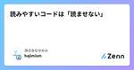
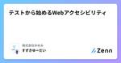
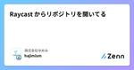
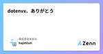

株式会社ゆめみのフィード
https://zenn.dev/p/yumemi_inc
みんな知ってるあのサービスも、ゆめみが一緒に作ってます。スマホアプリ/Webサービスの企画・UX/UI設計、開発運用の内製化支援。Swift,Kotlin,Rust,Go,Flutter,ML,React,AWS等エンジニア・クリエイターの会社です。Twitterで情報配信中
フィード

読みやすいコードは「読ませない」 194
194
株式会社ゆめみのフィード
経験の浅い人にちょくちょくするアドバイスとして、「コードリーディングのときにはあんまコードを読まないほうがいいよ」がある。コード全体を詳細に読むのではなく、名前やインターフェイスからコードの意図を把握することで効率的にコードリーディングできる。完全に下記の受け売り。「実装は極力見ないようにして、インターフェイスと構造を理解するようにするんです。ダイヤグラムや、関係のグラフを書いたりして。実装はちゃんと出来ていると信じて、読んでいるメソッドやクラスのインターフェイスの役割やパラメータをしっかり理解するようにするんです。そっちの方が、実装を見るよりずっと楽ですよね。」牛尾 剛「コードリ...
8日前

テストから始めるWebアクセシビリティ 3
株式会社ゆめみのフィード
自己紹介すずきゆーだい(@szkyudi)です。株式会社ゆめみという会社でWebフロントエンドエンジニアをやっています。秋になると柿を200個食べます。 アクセシビリティは誰のためにあるかアクセシビリティは特定の人々だけでなく、あらゆる人のためにあるものです。 というような言葉はよく耳にすると思います。ただ、この言葉にピンときていない方々も多いと思いますし、私自身、まだまだ理解を深めていく必要があると感じています。そこで、この記事では、エンジニア自身がアクセシビリティ向上の恩恵を受ける当事者であることを認識してもらうとともに、少しでもアクセシビリティに興味を持ってもらうため...
9日前

Raycast からリポジトリを開いてる 1
株式会社ゆめみのフィード
Raycast からリポジトリを開いてる。たまーに開発環境見せあいっこをするときに、意外にも知られてなくて「へー、それいいね」と言われることが多いので紹介。https://www.raycast.com/moored/git-repos気に入っているところはRaycastなのでHotkeyが使えておよそ最短距離でリポジトリが開けるリポジトリの検索ができる開くエディタが選べるGitHubも開ける（Code、Issues、PRとタブも選べる）あたり。自分はghrでリポジトリを管理しているので、そのディレクトリを登録している。それでよくあるghq+pecoみたいなこと...
11日前

dotenvx、ありがとう 52
株式会社ゆめみのフィード
dotenv の改良版である dotenvx が使ってみてめっちゃ良かったので紹介します。https://dotenvx.com/https://github.com/dotenvx/dotenvx 特徴特に大きいのは「環境変数の暗号化」と「複数 .env ファイルへの対応」の2つです。 環境変数の暗号化dotenvx 経由で環境変数をセットすることで、環境変数が公開鍵暗号方式で暗号化されます。dotenvx set -f .env.development API_ENDPOINT https://example.com/graphql.env.developmen...
11日前

OKLCHで高コントラストなカラーパレットを生成するサイトを作った【ダークテーマ対応】
株式会社ゆめみのフィード
おいカラーパレットさ作るんだで！（A11y工船） リスペクトこの記事およびプロダクトは、フロントエンドカンファレンス北海道での発表 「ダークテーマとアクセシビリティの融合したカラートークンの設計」 に感銘を受け製作しました。https://speakerdeck.com/degudegu2510/dakutematoakusesibiriteinorong-he-sitakaratokunnoshe-ji モチベーション カラーパレットの明度変化についてダークテーマを含めてコントラスト比を維持したカラーパレットを作るの、むずすぎひんか！！出口 裕貴（Qiita...
16日前
人に優しいフォームを作ろう、特に日本人に
株式会社ゆめみのフィード
皆さん、フォーム作ってますか？Webサイトやアプリを作るにあたって避けられないのがForm作成、多くの方が autocomplete を設定するなど、より使いやすいフォームを作成するために尽力されていることと思います。一方で、悪気なく書いたコードでより使いにくいフォームになってしまっている例が世の中には多く見られます(特に銀行系)今回は、よくあるフォームの実装を例に、(特に日本語話者にとって)より使いやすいフォームにするためのちょっとした仕様や私が考える対策を書いていこうと思います。忙しい方のために最初に書いておくと、この記事に書いてあることの多くは autocomplete の...
17日前
ネストされたnavigationDestinationとTextFieldの数値入力のバグ
株式会社ゆめみのフィード
問題と検証以下のコードで添付GIFのように数値の入力が適切にできない全桁を削除して空欄にできない小数点が入力できないleading zeroが自動で削除される（iOS 18, Xcode 16.0.0 RC）struct ContentView: View { @State private var path: NavigationPath = .init() @State private var department: Department = .init() var body: some View { Navigation...
21日前
pnpm の Node.js 管理機能について
株式会社ゆめみのフィード
概要pnpm 9.6.0 からパッケージ内での npm-scripts の実行に利用する Node.js のバージョン指定が出来るようになっており、以下について調べたので紹介したいと思います。package.json で指定可能なになった pnpm.executionEnv.nodeVersion についてpnpm env を利用した pnpm 内で利用する Node.js の管理方法について pnpm.executionEnv.nodeVersion について名前のとおり、実行環境における Node.js のバージョンを以下のように package.json で...
22日前
Kotlin の標準ライブラリで UUID が使えるようになりました
株式会社ゆめみのフィード
Kotlin 2.0.20 からついに Kotlin の標準ライブラリとして UUID が使えるようになりました。https://kotlinlang.org/docs/whatsnew2020.html#support-for-uuids-in-the-common-kotlin-standard-library!ただし、現時点では Experimental となっています。利用する際は、 @ExperimentalUuidApi の Annotation か -opt-in=kotlin.uuid.ExperimentalUuidApi のコンパイルオプションを付与する必要が...
24日前
【Android】アプリ内からウィジェットを追加する
株式会社ゆめみのフィード
ホーム画面から追加する方法と問題点独自の実装不要でもウィジェットを追加する方法はあります。しかし操作の手順が少々手間であり、ユーザーがウィジェットを追加しようと明確な意思が無いとたどり着けない点が辛いです。アプリ外でもユーザーに積極的に訴求できるのがウィジェットの最大の利点ですが、ウィジェットをユーザーに追加してもらうよう訴求するのが難しいのでは本末転倒です...ホーム画面の設定アプリのショートカットホーム画面を長押ししてウィジェットを選ぶホーム画面上のアプリアイコンを長押しする!添付動画は Pixel のエミュレータ（Android 14）...
1ヶ月前
【Android】Glance ウィジェットの設定・再設定に対応する
株式会社ゆめみのフィード
本記事が前提とする Glance の導入・状態管理は別記事で紹介していますhttps://qiita.com/Seo-4d696b75/items/235967ed0c4332683f6e ウィジェットの設定・再設定ウィジェットを追加する時、もしくは既に追加されたウィジェットを長押し（Android 12 以降のみ）すると設定画面を開くことができます。!添付動画は Pixel のエミュレータ（Android 13）で撮影しました。Android バージョン・端末メーカーによっては見た目が異なる場合もあります。初回の設定再設定 実装基本的な...
1ヶ月前
【Android】Glance 単体テスト
株式会社ゆめみのフィード
安定版 glance*-testing がリリース🎉https://developer.android.com/jetpack/androidx/releases/glance#1.1.01.0.0 まではglance-experimental-toolsという別リポジトリで試験的に提供されていましたが、ついに安定版として androidx (Jetpack) に仲間入りしました！ テストの実装基本的な方法は公式ドキュメントで説明されている通りです。ただし単体テストとして実装するため、Contextなど Android SDK 固有の依存を Robolectric で適切...
1ヶ月前
Storybook 8.3 で導入された Vitest 対応を React と Next.js で試す
株式会社ゆめみのフィード
Storybook 8.3 のリリーつについて先日 Storybook 8.3 がリリースされました。このリリースでの目玉機能は、なんといっても、待望の Vitest 対応ではないでしょうか。以下は、7月末に一部公開されていたスクリーンキャスト。https://x.com/yannbf/status/1816150365286314333とはいえ、何故か大々的に告知されていなかったり、Changelog には以下のようにあるのですが⚡️ First-class Vitest integration to run stories as component tests🔼 ...
1ヶ月前
なぜブラウザはChromeだけではだめなのか？-Web標準とその役割-
株式会社ゆめみのフィード
フロントエンドエンジニアの皆さん、一度はこう思ったことがあるのではないでしょうか？「ブラウザがChromeだけなら、もっと楽なのになあ」現在、一般的に使われているブラウザエンジンは以下の3つです:Gecko（Firefox）WebKit（Safari）Chromium（Chrome）これらのブラウザエンジンは、Web標準に従って、同じWebページのHTMLを解釈し、ほぼ同じように表示するように設計されています。しかし、実際にはエンジンごとにCSSの挙動が異なることがあり、そのために苦労した経験があるエンジニアも多いのではないでしょうか。(私は最近SafariのGridレイ...
1ヶ月前
Dagger Hilt でスマートにモックに差し替える
株式会社ゆめみのフィード
よくやりたくなるのが、モック用の product flavor の時のみに、通信をモックした UseCase や Repository を利用したいというもの。且つ、モック用のクラスはプロダクションのコードに含めたくない。flavor 毎に Dagger のモジュールを作って当該クラスのインスタンスを @Provides で定義しつつ、モック用の flavor だけモックのレスポンスを返すようにすればよいが、一つのクラスをモックするのに全 flavor のモジュールに @Provides の定義を記載してメンテしていかないとといけないので煩雑である。その解決として、次のような inl...
1ヶ月前
TS Kaigiの配信likeなスライド画面共有用サイトを作った
株式会社ゆめみのフィード
すごい今更な内容かもしれませんが、下書きの奥底に眠っていたので、世に出しておこうと思いました。私はTS Kaigiに参加したのですが、その配信画面を見て、「うお〜〜かっけ〜〜！」 となったため、同様の画面に情報を集約して共有できるサイトを作りました。 TS Kaigiの配信画面についてこちらに詳しい構築方法について説明されています。https://zenn.dev/ken7253/articles/tskaigi-streaming-layoutこの配信画面は右上にワイプがあり、右下にスポンサー一覧、左上にスライド、左下に登壇者情報となっています。上記記事より引用...
1ヶ月前
フロントエンドカンファレンス北海道 2024 公開資料・Xアカウントリンクまとめ
株式会社ゆめみのフィード
2024/08/24(土)で開催されたフロントエンドカンファレンス北海道 2024に関する、現時点での公開資料と X アカウントリンクをまとめました。よろしければご活用ください。!この記事は、個人ブログへ投稿した記事の転載です。 はじめにhttps://www.frontend-conf.jp登壇者名は敬称略させていただいています。スライドについては、ご本人がツイートで展開されていたり、スライドサービスにアップロードされているものを記載。X アカウントについては、fortee や資料に記載されていたり、資料公開の投稿で分かった方のみ記載。リンクの間違い等ありましたら...
2ヶ月前
普段ロックフェスしか行かないおやびんが技術のフェスに行ってみたから比較したるわなぁ〜（フロントエンドカンファレンス北海道2024）
株式会社ゆめみのフィード
簡単まとめ技術のフェスであるカンファレンスは、ロックフェスと同じくらいお熱いわぁ。夏フェスは暑くてしんどいよぉ〜って子分達は技術系のカンファレンスに行けばいいトモ。でも注意することもあるからちゃんとチェックやで。 プロローグ実行委員長が終わりの挨拶を告げた直後、会場は歓声の嵐に巻き込まれた。「ウォォォォ！最高だったぜぇぇぇ！また来年も北海道で開催してくれよなぁ！！」「もうフロントエンドカンファレンス北海道無しには生きていけないよママァァァ」「こんなにも胸が熱くなったのは学生運動の時以来じゃ...のぉ？婆さん。」なんだ？目頭が熱い。また来年、ここでみんなの顔が見た...
2ヶ月前
M1 Macにgoenvをインストールする
株式会社ゆめみのフィード
M1 Macにgoenvをインストールしたメモです。 環境機種 : MacBook Pro 2021(M1 Max)fish shell version : 3.5.1 goenvをインストールするドキュメントを読みながらやっていきます。https://github.com/go-nv/goenv/blob/master/INSTALL.md#homebrew-on-mac-os-x$ brew update$ brew install goenv$ goenv --versiongoenv 2.2.1これでgoenv自体はインストールできました。PATHを通...
2ヶ月前
TypeScriptで「選択肢」の定義をEnum的な定数にまとめる――satisfiesとSSoTもあるよ
株式会社ゆめみのフィード
ソート順の選択プルダウンがある一覧系ページを実装するとき、選択肢たちの管理方法に頭を悩ませることが多いと思います。商品一覧ページの概要ソート順プルダウンの選択肢たち上の画像に示したような場合だと、《クエリパラメータ》と《選択肢》の間の相互変換?sort=price&order=desc <--> 「価格が高い順」《select の状態に使うための文字列》と《選択肢》の間の相互変換<option value={id}>{label}</option>クエリパラメータが sort order の2つあり、それらをその...
2ヶ月前